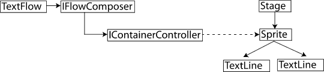

| Paket | flashx.textLayout.compose |
| Arabirim | public interface IFlowComposer |
| Uygulayıcılar | StandardFlowComposer |
| Dil Sürümü: | ActionScript 3.0 |
| Çalışma Zamanı Sürümleri: | Flash Player 10, AIR 1.5 |
Akış oluşturucusuyla görüntülenen metin akışları dinamik ve etkileşimli olabilir. Akış oluşturucusu, bir veya birkaç görüntüleme denetleyicisini yönetir. Her denetleyici, metin akışı için oluşturulan satırların görüntülendiği bir görüntüleme nesnesi kabıyla (örn. Sprite) ilişkilendirilir. Aşağıdaki diyagramda, TextFlow, IFlowComposer, ContainerController ve DisplayObjectContainer nesneleri arasındaki ilişki gösterilmektedir:

Akış oluşturucusu, her bir kaba metnin hangi kısmının yerleştiğini hesaplar ve kabın görüntüleme nesnesine uygun metin satırlarını ekler. IFlowComposer arabirimi, mizanpaj hesaplamalarına ve görünümün güncellenmesine yönelik ayrı yöntemleri tanımlar. IFlowComposer aynı zamanda bir metin akışının artımlı şekilde oluşturulmasına ve güncellenmesine yönelik yöntemleri de tanımlar. Uzun metin akışlarını güncellerken kullanıcı arabiriminin engellenmesini önlemek için bu yöntemler kullanılabilir.
Akış oluşturucusu, metin kompozisyonu ve görünümüne ek olarak, hangi kapta odak olduğunu kontrol eder, seçim vurgusunun görünümünü (kap sınırlarını geçebilir) yönetir ve akıştaki tüm TextLine nesnelerine doğrudan erişim sağlar.
Bir IFlowComposer uygulaması kullanmak için, TextFlow nesnesinin flowComposer özelliğine o uygulamanın bir örneğini atayın. Akış oluşturucusuna eklenen kaplardaki metnin mizanpajını yapmak ve metni görüntülemek için updateAllControllers() yöntemini çağırın.
Not: Basit, statik metin akışları için, metin satırı factory sınıflarından birini de kullanabilirsiniz. Bu factory sınıfları genellikle akış oluşturucusundan daha az ek yük içeren çizgiler oluşturur, ancak düzenlemeyi, dinamik değişiklikleri veya kullanıcı etkileşimini desteklemez.
İlgili API Öğeleri
FlowComposerBase
StandardFlowComposer
TextFlow
StringTextLineFactory
TextFlowTextLineFactory
| Özellik | Tanımlayan: | ||
|---|---|---|---|
| composing : Boolean [salt okunur]
Akış oluşturucusu geçerli olarak bir kompozisyon işlemi gerçekleştiriyorsa, true. | IFlowComposer | ||
| damageAbsoluteStart : int [salt okunur]
Akış başlangıcından itibaren mutlak bir konum olarak kök öğesindeki birinci geçersiz konum. | IFlowComposer | ||
| numControllers : int [salt okunur]
Bu IFlowComposer örneğine atanan kapların sayısı. | IFlowComposer | ||
| numLines : int [salt okunur]
Akışta oluşturulan toplam satır sayısı. | IFlowComposer | ||
| rootElement : ContainerFormattedElement [salt okunur]
Bu IFlowComposer örneğiyle ilişkilendirilmiş kök öğesi. | IFlowComposer | ||
| swfContext : ISWFContext
Çağrılar için kullanılacak ISWFContext örneği belirli bir SWF bağlamında yapılmalıdır. IFlowComposer öğesinin uygulamaları, arabirimin kullanıcıları uygulamayı içerenden farklı bir SWF bağlamında satır oluşturabilsin diye bu özelliğin ayarlanmasına izin vermelidir. | IFlowComposer | ||
| Yöntem | Tanımlayan: | ||
|---|---|---|---|
Bu IFlowComposer örneğine bir denetleyici ekler. | IFlowComposer | ||
Belirtilen dizindeki bu IFlowComposer örneğine bir denetleyici ekler. | IFlowComposer | ||
Akışın kök öğesindeki içeriği görüntülemek ve bu satırların, akışın görüntüleme kaplarındaki konumlarını göstermek için kaç satırın gerekli olduğunu hesaplar. | IFlowComposer | ||
Kök öğenin içeriğini belirtilen dizindeki kaba kadar ve o kap da dahil olacak şekilde oluşturur. | IFlowComposer | ||
Belirtilen konuma kadar kök öğenin içeriğini oluşturur. | IFlowComposer | ||
Satırları hasarlı ve "yeniden oluşturulması gerekiyor" olarak işaretleyin. | IFlowComposer | ||
Belirtilen konumdaki içeriği barındıran denetleyicinin dizinini döndürür. | IFlowComposer | ||
findLineAtPosition(absolutePosition:int, preferPrevious:Boolean = false):flashx.textLayout.compose:TextFlowLine
Belirtilen konumdaki içeriği barındıran TextFlowLine nesnesini döndürür. | IFlowComposer | ||
Belirtilen konumdaki içeriği barındıran TextFlowLine nesnesinin sıralı satır numarasını döndürür. | IFlowComposer | ||
Belirtilen konumdaki ContainerController nesnesini döndürür. | IFlowComposer | ||
Belirtilen ContainerController nesnesinin dizinini döndürür. | IFlowComposer | ||
Belirtilen satır numarasına sahip satırı döndürür. | IFlowComposer | ||
Etkileşim yöneticisi değiştiğinde, TextFlow tarafından çağrılır. | IFlowComposer | ||
Akışın başı ile belirtilen konumdaki içeriği barındıran satır arasındaki herhangi bir TextFlowLine nesnesinin hasarlı olarak işaretlenip işaretlenmediğini belirtir. | IFlowComposer | ||
Bu IFlowComposer örneğinden tüm denetleyicileri kaldırır. | IFlowComposer | ||
Bu IFlowComposer örneğinden bir denetleyiciyi kaldırır. | IFlowComposer | ||
Bu IFlowComposer örneğinden, belirtilen dizindeki denetleyiciyi kaldırır. | IFlowComposer | ||
absolutePosition parametresinin belirttiği konumu içeren kaba odağı ayarlar. | IFlowComposer | ||
| IFlowComposer | |||
Kök öğesinin içeriğini oluşturur ve görünümü günceller. | IFlowComposer | ||
TextFlow öğesine eşlemeyi korumak için satırlardaki uzunlukları güncelleyin. | IFlowComposer | ||
Belirtilen dizindeki kaba kadar ve o kap da dahil olacak şekilde görünümü oluşturur ve günceller. | IFlowComposer | ||
composing | özellik |
damageAbsoluteStart | özellik |
numControllers | özellik |
numLines | özellik |
numLines:int [salt okunur] | Dil Sürümü: | ActionScript 3.0 |
| Çalışma Zamanı Sürümleri: | Flash Player 10, AIR 1.5 |
Akışta oluşturulan toplam satır sayısı. Varsayılan olarak TLF tüm akışı oluşturmaz ve bu değer yanlış olabilir. Tüm satırların oluşturulmasını sağlamak için composeToPosition öğesini kullanın.
Uygulama
public function get numLines():introotElement | özellik |
rootElement:ContainerFormattedElement [salt okunur] | Dil Sürümü: | ActionScript 3.0 |
| Çalışma Zamanı Sürümleri: | Flash Player 10, AIR 1.5 |
Bu IFlowComposer örneğiyle ilişkilendirilmiş kök öğesi.
Yalnızca bir TextFlow nesnesi kök öğesi olabilir.
Uygulama
public function get rootElement():ContainerFormattedElementİlgili API Öğeleri
swfContext | özellik |
swfContext:ISWFContext| Dil Sürümü: | ActionScript 3.0 |
| Çalışma Zamanı Sürümleri: | Flash Player 10, AIR 1.5 |
ISWFContext örneği belirli bir SWF bağlamında yapılması gereken çağrılar için kullanılır.
IFlowComposer uygulamaları, arabirim kullanıcıları uygulamayı içeren SWF'den farklı bir SWF içeriğinde satırlar oluşturabilecek şekilde bu özelliğin ayarlanmasına izin vermelidir. ISWFContext öğesinin bir varsayılan uygulaması da sağlanmalıdır.
Uygulama
public function get swfContext():ISWFContext public function set swfContext(value:ISWFContext):voidİlgili API Öğeleri
addController | () | yöntem |
public function addController(controller:ContainerController):void| Dil Sürümü: | ActionScript 3.0 |
| Çalışma Zamanı Sürümleri: | Flash Player 10, AIR 1.5 |
Bu IFlowComposer örneğine bir denetleyici ekler.
Kap listesinin sonuna kap eklenir.
Parametreler
controller:ContainerController — Eklenecek ContainerController nesnesi.
|
addControllerAt | () | yöntem |
public function addControllerAt(controller:ContainerController, index:int):void| Dil Sürümü: | ActionScript 3.0 |
| Çalışma Zamanı Sürümleri: | Flash Player 10, AIR 1.5 |
Belirtilen dizindeki bu IFlowComposer örneğine bir denetleyici ekler.
Denetleyiciler listesi 0 tabanlıdır (birinci denetleyicinin dizini 0'dır).
Parametreler
controller:ContainerController — Eklenecek ContainerController nesnesi.
| |
index:int — ContainerController nesnesinin denetleyici listesine ekleneceği konumu belirten sayısal dizin.
|
compose | () | yöntem |
public function compose():Boolean| Dil Sürümü: | ActionScript 3.0 |
| Çalışma Zamanı Sürümleri: | Flash Player 10, AIR 1.5 |
Akışın kök öğesindeki içeriği görüntülemek ve bu satırların, akışın görüntüleme kaplarındaki konumlarını göstermek için kaç satırın gerekli olduğunu hesaplar.
Bu yöntemin uygulamaları, görünümü güncellememeli, ancak akış içeriği değişmediyse, compose() veya updateAllControllers() öğelerine yapılan sonraki çağrılar ek bir yeniden kompozisyon gerçekleştirmeyecek şekilde sonuçları kaydetmelidir.
Herhangi bir kabın içeriği değiştiyse, yöntem true değerini döndürmelidir.
Boolean — herhangi bir şey değiştiyse, true.
|
İlgili API Öğeleri
composeToController | () | yöntem |
public function composeToController(index:int):Boolean| Dil Sürümü: | ActionScript 3.0 |
| Çalışma Zamanı Sürümleri: | Flash Player 10, AIR 1.5 |
Kök öğenin içeriğini belirtilen dizindeki kaba kadar ve o kap da dahil olacak şekilde oluşturur.
Belirtilen dizindeki kaba kadar ve o kap da dahil olacak şekilde herhangi bir kabın içeriği değiştiyse, yöntem true değerini döndürür. index derleyicilerin sayısından daha büyük ise (veya belirtilmemişse), tüm kaplar oluşturulur.
Parametreler
index:int (default = NaN) |
Boolean — herhangi bir şey değiştiyse, true.
|
İlgili API Öğeleri
composeToPosition | () | yöntem |
public function composeToPosition(absolutePosition:int):Boolean| Dil Sürümü: | ActionScript 3.0 |
| Çalışma Zamanı Sürümleri: | Flash Player 10, AIR 1.5 |
Belirtilen konuma kadar kök öğenin içeriğini oluşturur.
Belirtilen konumdaki içeriği barındıran kaba kadar ve o kap da dahil olacak şekilde herhangi bir kabın içeriği değiştiyse, yöntem true değerini döndürür. absolutePosition TextFlow öğesinin uzunluğundan daha büyükse (veya belirtilmemişse), akışın tamamı oluşturulur.
Parametreler
absolutePosition:int (default = NaN) |
Boolean — herhangi bir şey değiştiyse, true.
|
İlgili API Öğeleri
damage | () | yöntem |
public function damage(startPosition:int, damageLength:int, damageType:String):void| Dil Sürümü: | ActionScript 3.0 |
| Çalışma Zamanı Sürümleri: | Flash Player 10, AIR 1.5 |
Satırları hasarlı ve "yeniden oluşturulması gerekiyor" olarak işaretleyin.
Parametreler
startPosition:int — aralığın başından hasara kadar.
| |
damageLength:int — hasar alacak karakter sayısı
| |
damageType:String — hasarın türü. flashx.textLayout.compose.FlowDamageType öğelerinin biri
|
İlgili API Öğeleri
findControllerIndexAtPosition | () | yöntem |
public function findControllerIndexAtPosition(absolutePosition:int, preferPrevious:Boolean = false):int| Dil Sürümü: | ActionScript 3.0 |
| Çalışma Zamanı Sürümleri: | Flash Player 10, AIR 1.5 |
Belirtilen konumdaki içeriği barındıran denetleyicinin dizinini döndürür.
Konum, bir metin akışının iki karakteri arasındaki veya diğer öğeleri arasındaki bölüm olarak değerlendirilebilir. absolutePosition öğesindeki değer, bir kabın son karakteri ile bir sonraki kabın birinci karakteri arasında bir konum olduğunda, preferPrevious parametresi true değerine ayarlanırsa önceki kap döndürülürken, preferPrevious parametresi false değerine ayarlanırsa sonraki kap döndürülür.
Belirtilen konumdaki içerik herhangi bir kapta değilse veya metin akışındaki konum aralığı dışındaysa, yöntem -1 değerini döndürmelidir.
Parametreler
absolutePosition:int — Kap dizininin arandığı içerik konumu.
| |
preferPrevious:Boolean (default = false) |
int — kap denetleyicisinin dizini veya bulunmazsa, -1.
|
findLineAtPosition | () | yöntem |
public function findLineAtPosition(absolutePosition:int, preferPrevious:Boolean = false):flashx.textLayout.compose:TextFlowLine| Dil Sürümü: | ActionScript 3.0 |
| Çalışma Zamanı Sürümleri: | Flash Player 10, AIR 1.5 |
Belirtilen konumdaki içeriği barındıran TextFlowLine nesnesini döndürür.
Konum, bir metin akışının iki karakteri arasındaki veya diğer öğeleri arasındaki bölüm olarak değerlendirilebilir. absolutePosition öğesindeki değer, bir satırın son öğesi ile bir sonraki satırın birinci öğesi arasında bir konum olduğunda, preferPrevious parametresi true değerine ayarlanırsa önceki satır döndürülürken, preferPrevious parametresi false değerine ayarlanırsa sonraki satır döndürülür.
Parametreler
absolutePosition:int — Kendisi için TextFlowLine nesnesini istediğiniz içeriğin konumu.
| |
preferPrevious:Boolean (default = false) |
flashx.textLayout.compose:TextFlowLine — belirtilen konumdaki içeriği barındıran TextFlowLine veya bulunmazsa, null değeri.
|
findLineIndexAtPosition | () | yöntem |
public function findLineIndexAtPosition(absolutePosition:int, preferPrevious:Boolean = false):int| Dil Sürümü: | ActionScript 3.0 |
| Çalışma Zamanı Sürümleri: | Flash Player 10, AIR 1.5 |
Belirtilen konumdaki içeriği barındıran TextFlowLine nesnesinin sıralı satır numarasını döndürür.
Birinci satırın numarası 0'dır ve son satırın numarası, satır sayısının bir eksiği olan değere eşittir. absolutePosition öğesinde belirtilen konum, metin akışının sonunu geçiyorsa, bu yöntem metin akışına eklenen sonraki yeni satıra atanacak numarayı (geçerli satır sayısına eşittir) döndürmelidir.
Konum, bir metin akışının iki karakteri arasındaki veya diğer öğeleri arasındaki bölüm olarak değerlendirilebilir. absolutePosition öğesindeki değer, bir kabın son satırı ile bir sonraki kabın birinci satırı arasında bir konum olduğunda, preferPrevious parametresi true değerine ayarlanırsa önceki kap döndürülürken, preferPrevious parametresi false değerine ayarlanırsa sonraki kap döndürülür.
Parametreler
absolutePosition:int — Kendisi için metin satırı istediğiniz içeriğin konumu.
| |
preferPrevious:Boolean (default = false) |
int — belirtilen konumdaki metin satırının dizini. Bulunmazsa, son kısmı geçilmiş olarak değerlendirir ve satır sayısını döndürür.
|
getControllerAt | () | yöntem |
public function getControllerAt(index:int):ContainerController| Dil Sürümü: | ActionScript 3.0 |
| Çalışma Zamanı Sürümleri: | Flash Player 10, AIR 1.5 |
Belirtilen konumdaki ContainerController nesnesini döndürür.
Parametreler
index:int — Döndürülecek ContainerController nesnesinin dizini.
|
ContainerController — belirtilen konumdaki ContainerController nesnesi.
|
getControllerIndex | () | yöntem |
public function getControllerIndex(controller:ContainerController):int| Dil Sürümü: | ActionScript 3.0 |
| Çalışma Zamanı Sürümleri: | Flash Player 10, AIR 1.5 |
Belirtilen ContainerController nesnesinin dizinini döndürür.
Parametreler
controller:ContainerController — Bulunacak ContainerController nesnesine başvuru.
|
int — belirtilen ContainerController nesnesinin dizini veya denetleyici bu akış oluşturucusuna bağlanmadıysa, -1.
|
getLineAt | () | yöntem |
public function getLineAt(index:int):flashx.textLayout.compose:TextFlowLine| Dil Sürümü: | ActionScript 3.0 |
| Çalışma Zamanı Sürümleri: | Flash Player 10, AIR 1.5 |
Belirtilen satır numarasına sahip satırı döndürür.
Satır listesi, sıfır ile satır sayısının bir eksiği olan değer arasında numaralandırılır. Dizin içindeki değer satır listesinin sınırları dışındaysa, bu işlev null değerini döndürür.
Parametreler
index:int — Döndürülecek TextFlowLine nesnesinin satır numarası.
|
flashx.textLayout.compose:TextFlowLine — belirtilen satır numarası ile TextFlowLine veya bulunmazsa, null.
|
interactionManagerChanged | () | yöntem |
public function interactionManagerChanged(newInteractionManager:ISelectionManager):void| Dil Sürümü: | ActionScript 3.0 |
| Çalışma Zamanı Sürümleri: | Flash Player 10, AIR 1.5 |
Etkileşim yöneticisi değiştiğinde, TextFlow tarafından çağrılır.
IFlowComposer uygulamaları, olay dinleyicilerini ve etkileşim yöneticisine başvuru oluşturan özellikleri güncellemelidir.
Parametreler
newInteractionManager:ISelectionManager — Yeni ISelectionManager örneği.
|
isDamaged | () | yöntem |
public function isDamaged(absolutePosition:int):Boolean| Dil Sürümü: | ActionScript 3.0 |
| Çalışma Zamanı Sürümleri: | Flash Player 10, AIR 1.5 |
Akışın başı ile belirtilen konumdaki içeriği barındıran satır arasındaki herhangi bir TextFlowLine nesnesinin hasarlı olarak işaretlenip işaretlenmediğini belirtir.
Parametreler
absolutePosition:int — ilgi alanındaki son konum
|
Boolean — Akışın başından, absolutePosition öğesindeki içeriği barındıran satıra kadar herhangi bir TextFlowLine nesnesi hasarlı olarak işaretlenirse, true.
|
removeAllControllers | () | yöntem |
public function removeAllControllers():void| Dil Sürümü: | ActionScript 3.0 |
| Çalışma Zamanı Sürümleri: | Flash Player 10, AIR 1.5 |
Bu IFlowComposer örneğinden tüm denetleyicileri kaldırır.
removeController | () | yöntem |
public function removeController(controller:ContainerController):void| Dil Sürümü: | ActionScript 3.0 |
| Çalışma Zamanı Sürümleri: | Flash Player 10, AIR 1.5 |
Bu IFlowComposer örneğinden bir denetleyiciyi kaldırır.
Parametreler
controller:ContainerController — Kaldırılacak ContainerController örneği.
|
removeControllerAt | () | yöntem |
setFocus | () | yöntem |
public function setFocus(absolutePosition:int, preferPrevious:Boolean = false):void| Dil Sürümü: | ActionScript 3.0 |
| Çalışma Zamanı Sürümleri: | Flash Player 10, AIR 1.5 |
absolutePosition parametresinin belirttiği konumu içeren kaba odağı ayarlar.
Odağın hangi ayarı ifade ettiğini tanımlamak, uygulamanın sorumluluğundadır. Örneğin, uygulama Stage nesnesinin yerleşik focus özelliğini kullanabilir (kaplar InteractiveObject olduğu sürece) veya uygulama odağı başka bir şekilde yönetebilir.
Parametreler
absolutePosition:int — Odağı alacak kabın metin akışındaki konumunu belirtir.
| |
preferPrevious:Boolean (default = false) |
İlgili API Öğeleri
setRootElement | () | yöntem |
public function setRootElement(newRootElement:ContainerFormattedElement):voidParametreler
newRootElement:ContainerFormattedElement |
updateAllControllers | () | yöntem |
public function updateAllControllers():Boolean| Dil Sürümü: | ActionScript 3.0 |
| Çalışma Zamanı Sürümleri: | Flash Player 10, AIR 1.5 |
Kök öğesinin içeriğini oluşturur ve görünümü günceller.
Metin mizanpajı genellikle iki aşamada yürütülür: kompozisyon ve görüntüleme. Kompozisyon aşamasında akış oluşturucusu, içeriği görüntülemek için kaç tane satırın gerekli olduğunu ve bu satırların akışın görüntüleme kaplarındaki konumunu hesaplar. Görüntüleme aşamasında akış oluşturucusu, kaplarının görüntüleme nesnesi alt öğelerini günceller. updateAllControllers() yönteminin her iki aşamayı yürütmesi beklenir. Etkili bir uygulama, tam kompozisyon ve görüntüleme döngüsünün yalnızca gerektiğinde gerçekleştirilmesi için içeriğe yapılan değişiklikleri izler.
Bu yöntem tüm metin satırlarını ve görüntüleme listesini hemen ve eşzamanlı şekilde günceller.
Herhangi bir kabın içeriği değişirse, yöntem true değerini döndürmelidir.
Boolean — herhangi bir şey değiştiyse, true.
|
updateLengths | () | yöntem |
public function updateLengths(startPosition:int, deltaLength:int):void| Dil Sürümü: | ActionScript 3.0 |
| Çalışma Zamanı Sürümleri: | Flash Player 10, AIR 1.5 |
TextFlow öğesine eşlemeyi korumak için satırlardaki uzunlukları güncelleyin.
Parametreler
startPosition:int — uzunluk değişikliğinin başı
| |
deltaLength:int — karakter sayısındaki değişiklik
|
updateToController | () | yöntem |
public function updateToController(index:int):Boolean| Dil Sürümü: | ActionScript 3.0 |
| Çalışma Zamanı Sürümleri: | Flash Player 10, AIR 1.5 |
Belirtilen dizindeki kaba kadar ve o kap da dahil olacak şekilde görünümü oluşturur ve günceller.
Belirtilen dizindeki kaba kadar ve o kap da dahil olmak üzere tüm kapların geçerli olması için, updateToController() yönteminin hem içerik oluşturması hem de görünümü güncellemesi beklenir. Örneğin, yirmi kaplık bir zinciriniz varsa ve 0 dizinini belirtirseniz, updateToController() öğesi birinciden onuncuya kadar (0-9 arasındaki dizinler) kapların oluşturulmasını ve görüntülenmesini sağlar. Kompozisyon bu noktada durabilir. controllerIndex öğesi -1 (veya belirtilmemiş) olursa, tüm kaplar güncellenmelidir.
Bu yöntem tüm metin satırlarını ve görüntüleme listesini hemen ve eşzamanlı şekilde günceller.
Herhangi bir kabın içeriği değişirse, yöntem true değerini döndürmelidir.
Parametreler
index:int (default = NaN) |
Boolean — herhangi bir şey değiştiyse, true.
|
Tue Jun 12 2018, 01:09 PM Z